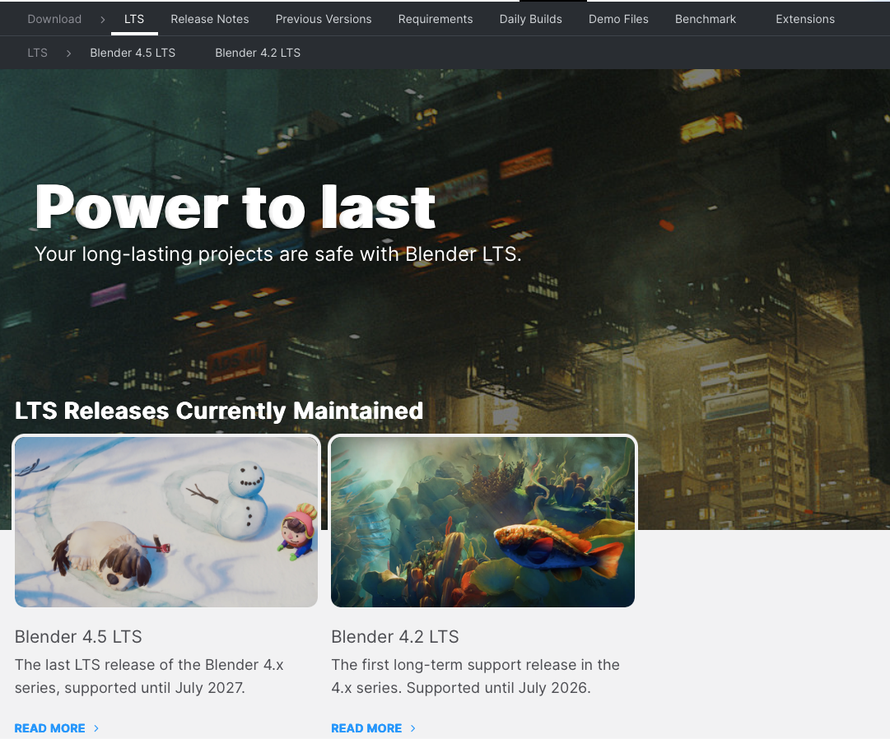
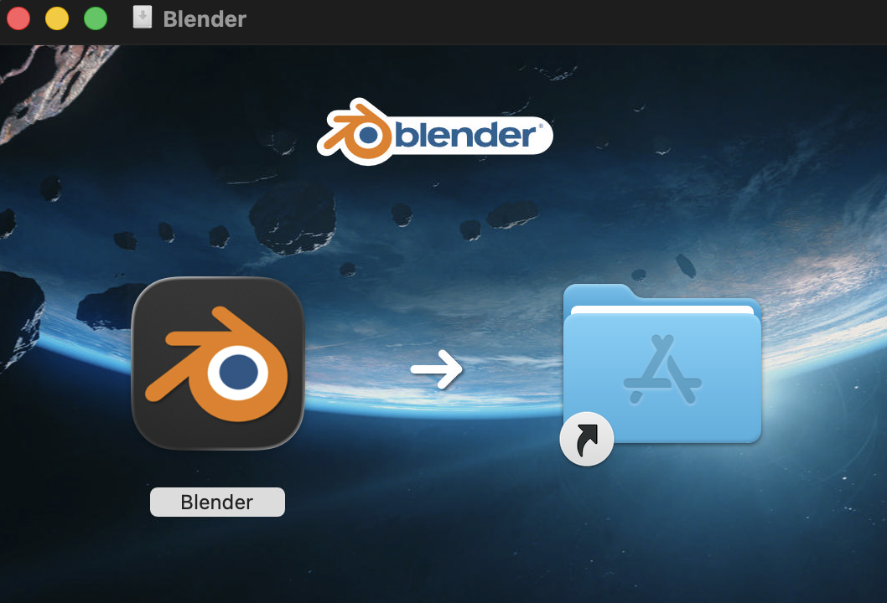
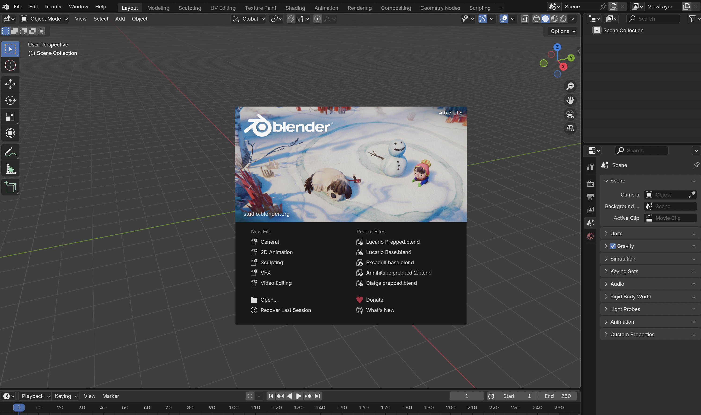
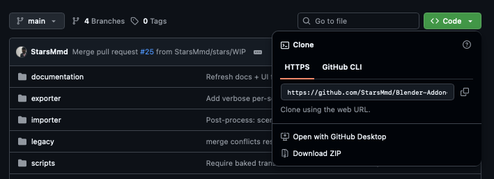
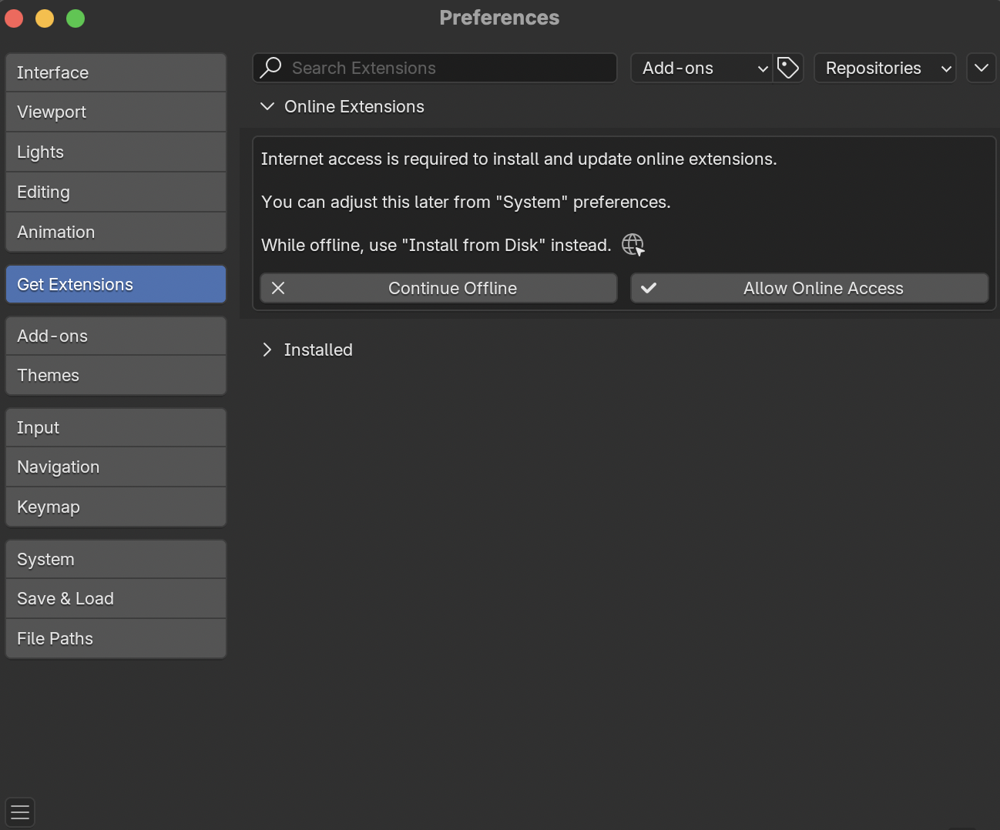
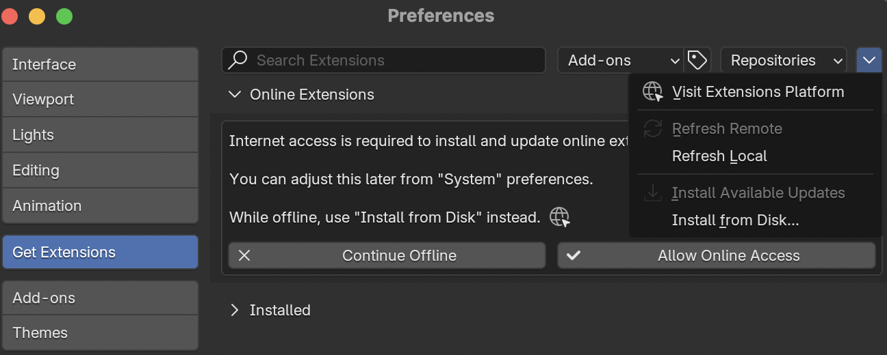
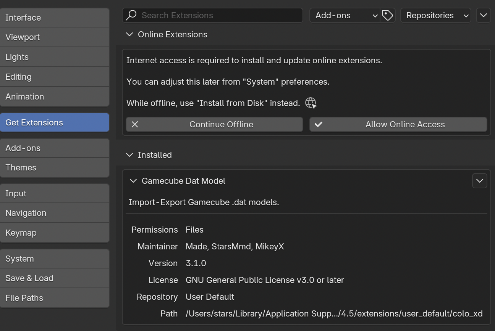

Blender HAL DAT Model Addon
A Blender addon for importing and exporting GameCube .dat models.
Built primarily for Pokémon Colosseum and Pokémon XD: Gale of Darkness,
with partial compatibility for other games that use the HAL DAT model format such as
Super Smash Bros. Melee, Kirby Air Ride,
Chibi-Robo! Plug Into Adventure! and Killer7.
What you can do with it:
- Open Pokémon models from Colosseum and XD inside Blender — with their bones, animations, textures, and shiny colors all intact.
- Edit those models — change shapes, textures, animations, or replace them with something completely custom.
- Save the edited model back out as a file the game can read, and play with it in-game.
- Save models from any source or custom models back out as files the game can read, and play with them in-game.
Supported file types:
.dat, .fdat, .rdat, .pkx, .fsys, .wzx, .cam.
Don't worry if those don't mean anything to you — the importer and exporter guides explain when you'll meet each one.
Target Blender version: 4.5.7 LTS (a specific release of Blender — see below).
Installing Blender
Blender is the free 3D software this addon plugs into. The addon is built and tested against Blender 4.5.7 LTS, so use that exact version. Other versions may behave unexpectedly or fail to load the addon at all.
Step 1 — Download Blender 4.5.7 LTS
Go to blender.org/download/lts and pick the 4.5 LTS download for your operating system (Windows, macOS, or Linux). LTS stands for "Long Term Support" — it's the version Blender keeps stable for years.

Step 2 — Run the installer
Open the file you just downloaded and follow the prompts. On Windows it's a standard installer;
on macOS, drag the Blender app into your Applications folder; on Linux, extract the archive somewhere
and run the blender binary.

Step 3 — Launch Blender
Open Blender. You'll see a splash screen, then the default scene with a cube in the middle. You can dismiss the splash by clicking anywhere outside it.

Installing the plugin
The plugin is distributed as a .zip file you drag into Blender. There's nothing else
to install — once enabled, the import and export options appear in Blender's File menu.
Step 1 — Download the plugin
Grab the latest plugin .zip from the
project's GitHub page.
On GitHub, click the green Code button and choose Download ZIP.

Step 2 — Open Blender's Extensions preferences
In Blender, open the Edit menu at the top of the window, then choose Preferences…. In the window that opens, click Get Extensions in the left-hand list.

Step 3 — Install the .zip
You have two options:
- Drag and drop: drag the downloaded
.zipfrom your file browser directly onto the Blender window. Blender will pop up a dialog asking to install — confirm it. - Install from disk: in the Extensions panel, click the small dropdown in the top-right
corner (next to the search box) and pick Install from Disk…. Browse to the
.zipfile and select it.

Step 4 — Confirm the addon is enabled
After installing, the addon shows up in the Extensions list with a checkbox next to its name. Make sure the checkbox is ticked. Close the Preferences window.

To verify it worked, open the File menu at the top of Blender. You should see a Gamecube model (.dat) entry under both Import and Export.
Get Started
Importing models →
Open Pokémon and other GameCube models in Blender. Skeleton, meshes, materials, textures, animations, and shiny variants — all loaded automatically.
Exporting models →
Save a Blender scene back to a .dat or .pkx the game can load.
Works for models you imported here, as well as custom models from other sources.
Particles
A handful of Pokémon in Colosseum and XD carry built-in particle effects (flames, mist, smoke). Full particle support is a work in progress and intended to be available in a future release — the addon can read these from the file, but doesn't yet bring them into Blender as editable particle systems, and doesn't export them back out. Plain models without particles work normally.
The Pokémon affected are mostly fire-, gas-, and mist-themed: Moltres, Articuno, the Charmander line, Gastly, Magmar, Magcargo, Torkoal, Koffing, Weezing, and Vaporeon (plus a few shiny variants).
Community
If you're interested in reverse engineering the Pokémon games on the GameCube and Wii consoles, join us on Discord: discord.gg/xCPjjnv. That's also the best place to ask for help if you get stuck — there are people who can walk you through specific problems with your model or scene.